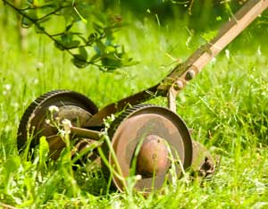
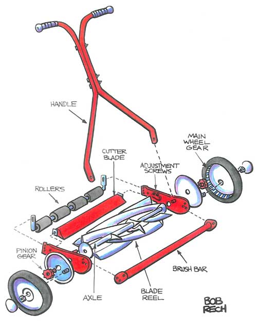

In 1962, when I was a teenager, my father gave our neighbor, Mr. Gruder, $10 for a reel mower of my very own. The ash handle shone with age and use, and it had a canvas grass catcher. Mr. Gruder had built the reel mower from parts - the finest custom-made machine of its kind ever built. Pushing it revved up the blades, a cylinder of curved scimitars that sliced each blade of grass to the same height. Mr. Gruder gave me a lesson on how to safely sharpen the blades to razor sharp. “Wear gloves,” he said, as he demonstrated.
For nearly a year, I mowed lawns with my trusty push mower. I wish I still had it. But two years ago, I found a Super Chief reel mower in an antique store. It had a broken handle but a spotless canvas grass catcher. It was just $75 for a piece of American history, stored indoors for 50 years.
A good vintage reel lawn mower handle should be splinter-free, with solid handles baptized in boiled linseed oil. But if a bad handle is the only thing wrong with a used machine and it has a good price, buy it. For $10, I commissioned a high school shop class to make a handle for the Super Chief.
Old machines in good working condition are rare, but worth the hunt because they’re often inexpensive. But are they worth the hours of restoration? To me, yes, but you may be happier with a more recent model - something you won’t have to repair or restore first. The Mercedes of modern reel mowers is the German-made Brill Razorcut 38, and it’s priced accordingly ($250). But you can also find economy models, such as Scotts Classic Reel Mower, priced at a bit more than $100. Tip: The grass-catcher attachment is worth having on all models, as reel mowers don’t mulch clippings.
You should perform basic maintenance on a reel lawn mower after every third use, and the procedure is perfectly simple. First, put it up on a workbench. If you grovel at its level, it’s easier to be injured by the blades and lose tiny parts in the grass.
If it’s old, the blades probably need to be sharpened, and you need practice to do this right. Moving the wheels forward causes the blade cage to rotate rapidly because of the movement of a series of gears (which might need to be oiled or repacked with grease). Check the rubber wheels. If they’re slick and can’t get traction, the reel won’t turn efficiently. You can temporarily repair this by making grooves in the tires with a three-corner file - until you have time to look for replacement wheels.
Always wear leather gloves when working with the blades for any reason, including debris removal when mowing. To hone the blades, jam a wooden stick through the cage to prevent it from turning. A coarse sharpening stone and a light application of cutting oil will make each blade sharp within seven or eight light (but even and smooth) strokes. Follow the angle of the blade as closely as possible.
Use the same number of strokes on every blade to ensure a uniform distance of all blades from the cutting bar, which should almost touch the whirling blades, leaving room for the width of a blade of grass. You may need to adjust the cutting bar when you’re done. If your blades slice easily through a sheet of newspaper placed on the cutting bar, you’ve done it right.
Some experts advise dabbing the honed blades with grinding paste and pulling the mower backward for 10 minutes. But I tried out this method, and can tell you that death-by-boredom may occur in half that time. A young person, if desperate enough, might do it for $20, if nobody sees them. (Those were exactly my nephew’s terms.)
On most models, the gears in the wheel assembly aren’t hard to access, but you must be careful not to lose any nuts, bolts or pins. (Drop them in a small can or jar for collection and oiling.) Remove the wheel covers and pack the exposed gears with light grease. If you’re lucky, the wheel covers on your model will have lubrication holes. After each mowing, use a garden hose or air compressor to clean the blades and wheels. Then spray everything liberally with WD-40.
Always mow on a dry, clear day - weekly is best.
I don’t miss the pollution, the stench of hydrocarbon exhaust, or the unrelenting decibels of a gas engine mower. Instead, I have the silence, the pure scent of newly mown grass, and the satisfaction of light muscle-powered work. No earplugs required.
|
 ISTOCKPHOTO/TOMASZ NIEWEGLOWSKI New, light reel mowers are available, but you can also buy a used machine and restore it. |
 BOB RECH Push reel mowers have fewer parts than gas engine mowers, so they’re easier to maintain. |
|